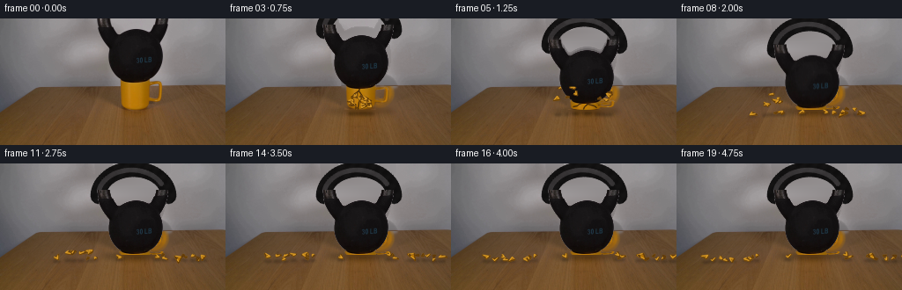
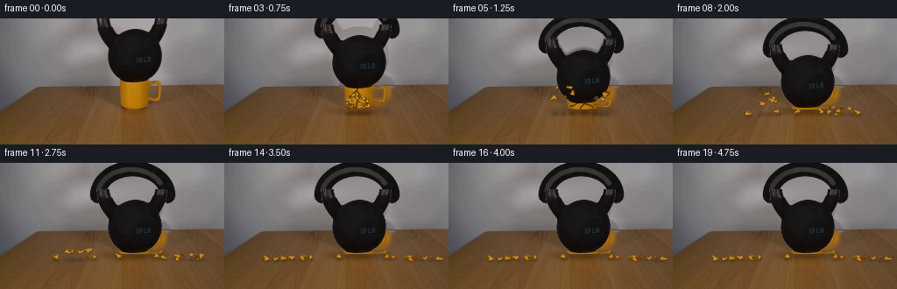
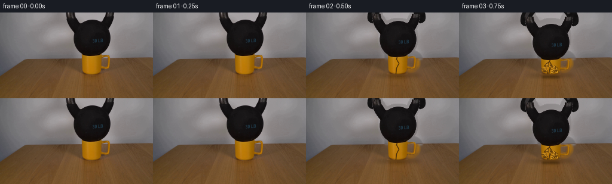

CODING AGENTS AS PIXEL WORLD MODELS
traex/GPT-5.6-Sol · 0188
点击播放 · 原生 RGB 像素
逐轮保存的候选
回放视频、检查图与代码变化。
每份候选均可单独播放。实际图片检查记录在下方工具轨迹中。
候选 01播放与检查图
点击播放 · 原生 RGB 像素

展开代码变化
--- 上一保存版本
+++ 本次保存版本
@@ -0,0 +1,264 @@
+from pathlib import Path
+import math
+import cv2
+import numpy as np
+from PIL import Image
+import artifact_io
+
+CASE = Path(__file__).resolve().parent
+W, H = 256, 144
+base = np.asarray(Image.open(CASE / "first_frame.png").convert("RGB"), dtype=np.uint8)
+
+
+def over(dst, rgb, alpha):
+ """Alpha composite arrays/layers onto uint8 RGB."""
+ a = np.asarray(alpha, np.float32)
+ if a.ndim == 2:
+ a = a[..., None]
+ out = dst.astype(np.float32) * (1.0 - a) + np.asarray(rgb, np.float32) * a
+ return np.clip(out + .5, 0, 255).astype(np.uint8)
+
+
+# Identify the photographed objects only to recover the fixed set behind them.
+lum = base.astype(np.float32).mean(axis=2)
+kettle_core = np.zeros((H, W), np.uint8)
+kettle_core[:74, 104:198] = (lum[:74, 104:198] < 94).astype(np.uint8) * 255
+# Keep only the main dark connected object.
+n, labels, stats, _ = cv2.connectedComponentsWithStats((kettle_core > 0).astype(np.uint8), 8)
+if n > 1:
+ main = 1 + int(np.argmax(stats[1:, cv2.CC_STAT_AREA]))
+ kettle_core = (labels == main).astype(np.uint8) * 255
+kettle_remove = cv2.dilate(kettle_core, np.ones((7, 7), np.uint8), iterations=1)
+
+# The cup consists of its body and its loop handle. Removing the entire small region
+# gives a clean table/wall for the later broken state.
+cup_remove = np.zeros((H, W), np.uint8)
+cv2.ellipse(cup_remove, (153, 72), (19, 6), 0, 0, 360, 255, -1, cv2.LINE_AA)
+cv2.rectangle(cup_remove, (133, 69), (172, 104), 255, -1)
+cv2.ellipse(cup_remove, (174, 84), (16, 16), 0, 0, 360, 255, 6, cv2.LINE_AA)
+remove = cv2.max(kettle_remove, cv2.dilate(cup_remove, np.ones((5, 5), np.uint8), 1))
+
+# Inpainting handles the fine wood grain. The broad wall is then restored using its
+# actual row-wise illumination on either side, avoiding blurred object-shaped ghosts.
+bgr = base[:, :, ::-1]
+clean = cv2.inpaint(bgr, remove, 5, cv2.INPAINT_TELEA)[:, :, ::-1]
+for y in range(0, 77):
+ xl = base[y, 88:105].astype(np.float32).mean(axis=0)
+ xr = base[y, 198:216].astype(np.float32).mean(axis=0)
+ for x in np.flatnonzero(remove[y] > 0):
+ q = np.clip((x - 104) / 94.0, 0, 1)
+ clean[y, x] = np.clip(xl * (1-q) + xr * q, 0, 255)
+# Soften only the synthesized patch boundaries, leaving all original set texture fixed.
+soft = cv2.GaussianBlur(remove.astype(np.float32) / 255., (0, 0), .9)
+clean = over(base, clean, soft)
+
+# Photographic kettlebell matte. Deep pixels are opaque; only its antialiased edge is soft.
+k_alpha = np.zeros((H, W), np.float32)
+region = np.zeros((H, W), bool)
+region[:74, 104:198] = True
+ka = np.clip((108.0 - lum) / 28.0, 0, 1)
+ka[lum < 76] = 1.0
+k_alpha[region] = ka[region]
+k_alpha *= (cv2.dilate(kettle_core, np.ones((3, 3), np.uint8), 1) > 0)
+k_alpha = cv2.GaussianBlur(k_alpha, (0, 0), .32)
+k_rgb = base.copy()
+
+# Isolate the warm yellow glaze of the source cup for physically compressed versions.
+r, g, b = [base[:, :, i].astype(np.float32) for i in range(3)]
+sat = np.minimum((r-g-17.) / 24., (g-b-18.) / 25.)
+c_alpha = np.clip(sat, 0, 1)
+geom = np.zeros((H, W), np.float32)
+geom[68:105, 135:170] = 1
+# Handle glaze is a narrower color-selected loop.
+geom[69:99, 164:188] = 1
+c_alpha *= geom
+c_alpha = cv2.GaussianBlur(c_alpha, (0, 0), .45)
+c_rgb = base.copy()
+
+
+def shadow_layer(img, cx, cy, rx, ry, strength=0.30):
+ a = np.zeros((H, W), np.uint8)
+ cv2.ellipse(a, (int(cx), int(cy)), (int(rx), int(ry)), 0, 0, 360,
+ int(255*strength), -1, cv2.LINE_AA)
+ a = cv2.GaussianBlur(a, (0, 0), 3.0).astype(np.float32)/255
+ return over(img, np.zeros_like(img), a)
+
+
+def handle_layer(drop):
+ """Complete the part of the iron handle initially above the top of frame."""
+ rgb = np.zeros((H, W, 3), np.uint8)
+ a = np.zeros((H, W), np.uint8)
+ cy = int(round(drop + 7))
+ # Thick cast-iron arch, with dim upper-left reflection and heavy lower edge.
+ cv2.ellipse(a, (151, cy), (40, 31), 0, 180, 360, 255, 16, cv2.LINE_AA)
+ cv2.ellipse(rgb, (151, cy), (40, 31), 0, 180, 360, (18, 17, 17), 16, cv2.LINE_AA)
+ cv2.ellipse(rgb, (149, cy-1), (38, 29), 0, 193, 334, (35, 33, 34), 3, cv2.LINE_AA)
+ cv2.ellipse(a, (149, cy-1), (38, 29), 0, 193, 334, 210, 3, cv2.LINE_AA)
+ # Fine mottling makes the analytic extension agree with the photographed iron.
+ yy, xx = np.mgrid[:H, :W]
+ grain = (1.8*np.sin(xx*.53 + yy*.31) + 1.2*np.sin(xx*.17-yy*.71))
+ rgb = np.clip(rgb.astype(np.float32) + grain[...,None]*(a[...,None]>0), 0, 255).astype(np.uint8)
+ return rgb, a.astype(np.float32)/255.
+
+
+def shifted_layer(rgb, alpha, dy):
+ M = np.float32([[1, 0, 0], [0, 1, float(dy)]])
+ rr = cv2.warpAffine(rgb, M, (W, H), flags=cv2.INTER_LINEAR,
+ borderMode=cv2.BORDER_CONSTANT, borderValue=(0,0,0))
+ aa = cv2.warpAffine(alpha, M, (W, H), flags=cv2.INTER_LINEAR,
+ borderMode=cv2.BORDER_CONSTANT, borderValue=0)
+ return rr, aa
+
+
+def crushed_cup(drop, damage):
+ """Vertically buckle the photographed cup while retaining its real glaze."""
+ # Intact 36 px cup height loses essentially the same amount as the weight descends.
+ new_h = max(4, int(round(36 - damage*1.02)))
+ y_top = 104 - new_h
+ src_rgb = c_rgb[68:105, 132:190]
+ src_a = c_alpha[68:105, 132:190]
+ # A slight outward bulge before fracture.
+ width = 58 + int(min(damage, 17)*.24)
+ rr = cv2.resize(src_rgb, (width, new_h), interpolation=cv2.INTER_AREA)
+ aa = cv2.resize(src_a, (width, new_h), interpolation=cv2.INTER_AREA)
+ out_rgb = np.zeros((H,W,3), np.uint8)
+ out_a = np.zeros((H,W), np.float32)
+ x0 = 161 - width//2
+ out_rgb[y_top:104, x0:x0+width] = rr
+ out_a[y_top:104, x0:x0+width] = aa
+ return out_rgb, out_a, y_top, x0, width, new_h
+
+
+# Deterministic ceramic shard properties. Screen-space simulation with gravity and
+# low restitution gives a fast crack, one bounce, then a convincing rest on the wood.
+rng = np.random.default_rng(188)
+particles = []
+for i in range(22):
+ side = -1 if i % 2 == 0 else 1
+ x = 153 + rng.uniform(-11, 11)
+ y = 92 + rng.uniform(-4, 9)
+ vx = side * rng.uniform(18, 54) + rng.uniform(-6, 6)
+ vy = rng.uniform(-57, -12)
+ size = rng.uniform(2.1, 5.7) * (1.35 if i < 5 else 1)
+ ang = rng.uniform(0, math.tau)
+ spin = rng.uniform(-8, 8)
+ col = [(190,126,10),(177,111,3),(151,94,2),(201,139,21),(132,83,9)][i % 5]
+ particles.append([x,y,vx,vy,size,ang,spin,col])
+
+# Advance particle state at video cadence. States are saved after each frame.
+states = [[] for _ in range(20)]
+active = [p[:] for p in particles]
+for fi in range(3,20):
+ if fi > 3:
+ dt=.25
+ for p in active:
+ p[0] += p[2]*dt
+ p[1] += p[3]*dt
+ p[3] += 92*dt
+ p[5] += p[6]*dt
+ floor = 106.0 + .030*abs(p[0]-153)
+ if p[1] > floor:
+ p[1] = floor
+ if p[3] > 9:
+ p[3] *= -.27
+ p[2] *= .62
+ p[6] *= .55
+ else:
+ p[3] = 0
+ p[2] *= .45
+ p[6] *= .45
+ states[fi] = [p[:] for p in active]
+
+
+def draw_shards(img, fi, foreground=False):
+ if fi < 3: return img
+ # shadows first, only when shards are close enough to the tabletop
+ if not foreground:
+ sa = np.zeros((H,W), np.uint8)
+ for j,p in enumerate(states[fi]):
+ x,y,vx,vy,s,ang,spin,col=p
+ floor=106+.03*abs(x-153)
+ if y > floor-22:
+ cv2.ellipse(sa,(int(round(x)),int(round(floor+2))),
+ (max(1,int(s)),1),0,0,360,60,-1,cv2.LINE_AA)
+ sa=cv2.GaussianBlur(sa,(0,0),1.3).astype(np.float32)/255
+ img=over(img,np.zeros_like(img),sa)
+ for j,p in enumerate(states[fi]):
+ # Half are behind the bell; the rest sit visibly along its front foot.
+ if (j % 3 == 0) != foreground: continue
+ x,y,vx,vy,s,ang,spin,col=p
+ if x < -8 or x > W+8: continue
+ pts=[]
+ for k,(rad,off) in enumerate(((1.2,0),(.75,2.15),(.55,4.15))):
+ th=ang+off
+ pts.append((int(round(x+math.cos(th)*s*rad)),
+ int(round(y+math.sin(th)*s*rad*.65))))
+ poly=np.array(pts,np.int32)
+ cv2.fillConvexPoly(img,poly,col,lineType=cv2.LINE_AA)
+ cv2.polylines(img,[poly],True,(91,56,12),1,cv2.LINE_AA)
+ # Tiny bright glaze face.
+ if s>3.1:
+ q=((poly.astype(np.float32)*.72 + np.array([x,y])*.28)).astype(np.int32)
+ cv2.polylines(img,[q],False,(221,158,39),1,cv2.LINE_AA)
+ return img
+
+
+def draw_cracks(img, fi, ytop, compression):
+ if fi < 2 or compression > 27: return img
+ h=max(1,104-ytop)
+ paths = [
+ [(153,ytop),(151,ytop+h*.24),(155,ytop+h*.44),(151,ytop+h*.69),(150,103)],
+ [(151,ytop+h*.24),(145,ytop+h*.38),(143,ytop+h*.57)],
+ [(155,ytop+h*.44),(162,ytop+h*.56),(165,ytop+h*.78)],
+ [(143,ytop+h*.57),(138,ytop+h*.70)],
+ ]
+ count=1 if fi==2 else min(4,fi-1)
+ for path in paths[:count]:
+ pts=np.array([(int(x),int(round(y))) for x,y in path],np.int32)
+ cv2.polylines(img,[pts],False,(63,38,10),1,cv2.LINE_AA)
+ return img
+
+
+drops = [0,0,2,7,15,24,30,28,29.5,30,30,30,30,30,30,30,30,30,30,30]
+frames=[]
+max_damage=0.0
+for fi,drop in enumerate(drops):
+ if fi == 0:
+ frame=base.copy() # contract: exactly pixel-identical
+ frames.append(frame)
+ continue
+ if fi == 1:
+ # A short load-bearing pause makes the subsequent brittle failure readable.
+ frames.append(base.copy())
+ continue
+ max_damage=max(max_damage,float(drop))
+ frame=clean.copy()
+ # The growing load shadow is locked to the table rather than the camera.
+ frame=shadow_layer(frame,153,105,38,4,.18+.10*min(max_damage/30,1))
+ cup_rgb,cup_a,ytop,x0,cw,ch=crushed_cup(drop,max_damage)
+ frame=over(frame,cup_rgb,cup_a)
+ frame=draw_cracks(frame,fi,ytop,max_damage)
+ frame=draw_shards(frame,fi,False)
+
+ # Analytic missing arch first, then the actual photographed bell on top.
+ hrgb,ha=handle_layer(drop)
+ frame=over(frame,hrgb,ha)
+ krgb,kaa=shifted_layer(k_rgb,k_alpha,drop)
+ # Mild exposure integration during the two quickest quarter-second descents.
+ if fi in (4,5):
+ prev=drops[fi-1]
+ for frac,opa in ((.55,.18),(.78,.22)):
+ trgb,taa=shifted_layer(k_rgb,k_alpha,prev+(drop-prev)*frac)
+ frame=over(frame,trgb,taa*opa)
+ frame=over(frame,krgb,kaa)
+ frame=draw_shards(frame,fi,True)
+
+ # Impact creates a brief dark contact seam, then it disappears under settled iron.
+ if fi in (6,7):
+ cv2.line(frame,(137,104),(170,104),(43,28,18),1,cv2.LINE_AA)
+ frames.append(frame)
+
+frames=np.stack(frames).astype(np.uint8)
+assert frames.shape == (20,144,256,3)
+assert np.array_equal(frames[0],base)
+artifact_io.save(frames, CASE)
候选 02播放与检查图
点击播放 · 原生 RGB 像素


展开代码变化
--- 上一保存版本
+++ 本次保存版本
@@ -167,6 +167,11 @@
p[3] = 0
p[2] *= .45
p[6] *= .45
+ # Static friction wins after the brief ceramic rattle. This also
+ # leaves a calm final hold instead of perpetual sub-pixel skating.
+ if fi >= 14:
+ p[1] = floor
+ p[2] = p[3] = p[6] = 0.0
states[fi] = [p[:] for p in active]
可观测工具轨迹
实际执行的命令与返回图片。
命令 1exit 0
/bin/bash -lc "cat prompt.txt && printf '\\n---RULES---\\n' && cat GENERATION_RULES.md"
命令 2exit 1
/bin/bash -lc "find . -maxdepth 2 -type f -printf '%p\\n' | sort && printf '\\n---TOOLS---\\n' && command -v ffmpeg && command -v python3"
命令 3exit 0
/bin/bash -lc "python3 - <<'PY'
from PIL import Image
import numpy as np
im=np.array(Image.open('first_frame.png').convert('RGB'))
print(im.shape, im.min((0,1)), im.max((0,1)), im.mean((0,1)))
# sample grid colors
for y in range(0,144,12):
print(y, ['%02x%02x%02x'%tuple(im[y,x]) for x in range(0,256,16)])
PY"命令 4exit 0
/bin/bash -lc "python3 - <<'PY'
from PIL import Image
import numpy as np
im=np.array(Image.open('first_frame.png').convert('RGB'))
g=np.mean(im,2)
chars=' .:-=+*#%@'
# avg blocks 4x4
for y in range(0,144,4):
s=''
for x in range(0,256,4):
v=g[y:y+4,x:x+4].mean(); s+=chars[min(9,int(v/256*10))]
print(f'{y:03} '+s)
PY"命令 5exit 0
/bin/bash -lc "python3 - <<'PY'
try: import cv2; print('cv2',cv2.__version__)
except Exception as e: print(e)
try: import scipy; print('scipy',scipy.__version__)
except Exception as e: print(e)
from PIL import Image
import numpy as np
im=np.array(Image.open('first_frame.png').convert('RGB'))
# color ASCII at 2x2 crop x90:210 y0:120 classify black, yellow, bg/table
for y in range(0,120,2):
s=''
for x in range(80,220,2):
p=im[y:y+2,x:x+2].mean((0,1)); r,g,b=p
if r<45 and g<42 and b<42: c='#'
elif r<70 and g<65 and b<65:c='O'
elif r>110 and g>65 and g<110 and b<45:c='Y'
elif y>=76 and r>g*1.15 and g>b*1.25:c='w'
elif max(p)-min(p)<14:c='.'
else:c='+'
s+=c
print(f'{y:03d}',s)
PY"命令 6exit 0
/bin/bash -lc "python3 - <<'PY'
import cv2, numpy as np
im=cv2.imread('first_frame.png'); rgb=im[:,:,::-1]
lum=rgb.mean(2)
for y in range(0,78,2):
xs=np.where(lum[y]<55)[0]
# runs
runs=[]
for x in xs:
if not runs or x>runs[-1][-1]+1:runs.append([x])
else:runs[-1].append(x)
print(y,[(r[0],r[-1]) for r in runs if len(r)>=2])
print('yellow bounds by r>100,g>50,b<40')
m=(rgb[:,:,0]>100)&(rgb[:,:,1]>50)&(rgb[:,:,1]<120)&(rgb[:,:,2]<50)
for y in range(65,120,2):
xs=np.where(m[y])[0];
if len(xs): print(y,xs.min(),xs.max(),len(xs))
PY"命令 7exit 0
/bin/bash -lc "python3 - <<'PY'
import cv2,numpy as np
im=cv2.imread('first_frame.png'); g=im.mean(2)
for t in [55,65,75,85,95]:
m=np.zeros_like(g,dtype=np.uint8); m[:76,100:200]=(g[:76,100:200]<t)
n,l,st,cent=cv2.connectedComponentsWithStats(m)
z=sorted(st[1:].tolist(),key=lambda a:a[4],reverse=True)[:8]
print(t,z)
PY"命令 8exit 0
/bin/bash -lc 'cat artifact_io.py'
命令 9exit 0
/bin/bash -lc "python3 - <<'PY'
import cv2,numpy as np
im=cv2.imread('first_frame.png')[:,:,::-1]
# kmeans colors crop x125-205,y65-120
z=im[65:120,120:210].reshape(-1,3).astype(np.float32)
crit=(cv2.TERM_CRITERIA_EPS+cv2.TERM_CRITERIA_MAX_ITER,100,.1)
_,lab,c=cv2.kmeans(z,8,None,crit,20,cv2.KMEANS_PP_CENTERS)
for i in np.argsort(np.bincount(lab[:,0]))[::-1]: print(np.bincount(lab[:,0])[i],c[i])
# print crop chars 1px per char y65:115 x120:205 based categories
for y in range(65,116):
s=''
for x in range(120,206):
r,g,b=im[y,x]; mx=max(r,g,b);mn=min(r,g,b)
if mx<60:c='#'
elif mx<85 and mx-mn<20:c='o'
elif r>g*1.35 and g>b*1.5 and r>90:c='Y'
elif r>g*1.15 and g>b*1.25:c='w'
elif mx-mn<18:c='.'
elif r>g*1.1 and g>b*1.1:c='t'
else:c='+'
s+=c
print(f'{y:03} {s}')
PY"命令 10exit 0
/bin/bash -lc "python3 - <<'PY'
from PIL import Image
import numpy as np
im=np.array(Image.open('first_frame.png').convert('RGB'))
for y in [68,70,72,74,76,78,80,85,90,95,100,105,110]:
print('\\ny',y)
for x in range(125,211,5): print(x,tuple(im[y,x]),end='; ')
PY"命令 11exit 0
/bin/bash -lc "cat > generate.py <<'PY'
from pathlib import Path
import math
import cv2
import numpy as np
from PIL import Image
import artifact_io
CASE = Path(__file__).resolve().parent
W, H = 256, 144
base = np.asarray(Image.open(CASE / \"first_frame.png\").convert(\"RGB\"), dtype=np.uint8)
def over(dst, rgb, alpha):
\"\"\"Alpha composite arrays/layers onto uint8 RGB.\"\"\"
a = np.asarray(alpha, np.float32)
if a.ndim == 2:
a = a[..., None]
out = dst.astype(np.float32) * (1.0 - a) + np.asarray(rgb, np.float32) * a
return np.clip(out + .5, 0, 255).astype(np.uint8)
# Identify the photographed objects only to recover the fixed set behind them.
lum = base.astype(np.float32).mean(axis=2)
kettle_core = np.zeros((H, W), np.uint8)
kettle_core[:74, 104:198] = (lum[:74, 104:198] < 94).astype(np.uint8) * 255
# Keep only the main dark connected object.
n, labels, stats, _ = cv2.connectedComponentsWithStats((kettle_core > 0).astype(np.uint8), 8)
if n > 1:
main = 1 + int(np.argmax(stats[1:, cv2.CC_STAT_AREA]))
kettle_core = (labels == main).astype(np.uint8) * 255
kettle_remove = cv2.dilate(kettle_core, np.ones((7, 7), np.uint8), iterations=1)
# The cup consists of its body and its loop handle. Removing the entire small region
# gives a clean table/wall for the later broken state.
cup_remove = np.zeros((H, W), np.uint8)
cv2.ellipse(cup_remove, (153, 72), (19, 6), 0, 0, 360, 255, -1, cv2.LINE_AA)
cv2.rectangle(cup_remove, (133, 69), (172, 104), 255, -1)
cv2.ellipse(cup_remove, (174, 84), (16, 16), 0, 0, 360, 255, 6, cv2.LINE_AA)
remove = cv2.max(kettle_remove, cv2.dilate(cup_remove, np.ones((5, 5), np.uint8), 1))
# Inpainting handles the fine wood grain. The broad wall is then restored using its
# actual row-wise illumination on either side, avoiding blurred object-shaped ghosts.
bgr = base[:, :, ::-1]
clean = cv2.inpaint(bgr, remove, 5, cv2.INPAINT_TELEA)[:, :, ::-1]
for y in range(0, 77):
xl = base[y, 88:105].astype(np.float32).mean(axis=0)
xr = base[y, 198:216].astype(np.float32).mean(axis=0)
for x in np.flatnonzero(remove[y] > 0):
q = np.clip((x - 104) / 94.0, 0, 1)
clean[y, x] = np.clip(xl * (1-q) + xr * q, 0, 255)
# Soften only the synthesized patch boundaries, leaving all original set texture fixed.
soft = cv2.GaussianBlur(remove.astype(np.float32) / 255., (0, 0), .9)
clean = over(base, clean, soft)
# Photographic kettlebell matte. Deep pixels are opaque; only its antialiased edge is soft.
k_alpha = np.zeros((H, W), np.float32)
region = np.zeros((H, W), bool)
region[:74, 104:198] = True
ka = np.clip((108.0 - lum) / 28.0, 0, 1)
ka[lum < 76] = 1.0
k_alpha[region] = ka[region]
k_alpha *= (cv2.dilate(kettle_core, np.ones((3, 3), np.uint8), 1) > 0)
k_alpha = cv2.GaussianBlur(k_alpha, (0, 0), .32)
k_rgb = base.copy()
# Isolate the warm yellow glaze of the source cup for physically compressed versions.
r, g, b = [base[:, :, i].astype(np.float32) for i in range(3)]
sat = np.minimum((r-g-17.) / 24., (g-b-18.) / 25.)
c_alpha = np.clip(sat, 0, 1)
geom = np.zeros((H, W), np.float32)
geom[68:105, 135:170] = 1
# Handle glaze is a narrower color-selected loop.
geom[69:99, 164:188] = 1
c_alpha *= geom
c_alpha = cv2.GaussianBlur(c_alpha, (0, 0), .45)
c_rgb = base.copy()
def shadow_layer(img, cx, cy, rx, ry, strength=0.30):
a = np.zeros((H, W), np.uint8)
cv2.ellipse(a, (int(cx), int(cy)), (int(rx), int(ry)), 0, 0, 360,
int(255*strength), -1, cv2.LINE_AA)
a = cv2.GaussianBlur(a, (0, 0), 3.0).astype(np.float32)/255
return over(img, np.zeros_like(img), a)
def handle_layer(drop):
\"\"\"Complete the part of the iron handle initially above the top of frame.\"\"\"
rgb = np.zeros((H, W, 3), np.uint8)
a = np.zeros((H, W), np.uint8)
cy = int(round(drop + 7))
# Thick cast-iron arch, with dim upper-left reflection and heavy lower edge.
cv2.ellipse(a, (151, cy), (40, 31), 0, 180, 360, 255, 16, cv2.LINE_AA)
cv2.ellipse(rgb, (151, cy), (40, 31), 0, 180, 360, (18, 17, 17), 16, cv2.LINE_AA)
cv2.ellipse(rgb, (149, cy-1), (38, 29), 0, 193, 334, (35, 33, 34), 3, cv2.LINE_AA)
cv2.ellipse(a, (149, cy-1), (38, 29), 0, 193, 334, 210, 3, cv2.LINE_AA)
# Fine mottling makes the analytic extension agree with the photographed iron.
yy, xx = np.mgrid[:H, :W]
grain = (1.8*np.sin(xx*.53 + yy*.31) + 1.2*np.sin(xx*.17-yy*.71))
rgb = np.clip(rgb.astype(np.float32) + grain[...,None]*(a[...,None]>0), 0, 255).astype(np.uint8)
return rgb, a.astype(np.float32)/255.
def shifted_layer(rgb, alpha, dy):
M = np.float32([[1, 0, 0], [0, 1, float(dy)]])
rr = cv2.warpAffine(rgb, M, (W, H), flags=cv2.INTER_LINEAR,
borderMode=cv2.BORDER_CONSTANT, borderValue=(0,0,0))
aa = cv2.warpAffine(alpha, M, (W, H), flags=cv2.INTER_LINEAR,
borderMode=cv2.BORDER_CONSTANT, borderValue=0)
return rr, aa
def crushed_cup(drop, damage):
\"\"\"Vertically buckle the photographed cup while retaining its real glaze.\"\"\"
# Intact 36 px cup height loses essentially the same amount as the weight descends.
new_h = max(4, int(round(36 - damage*1.02)))
y_top = 104 - new_h
src_rgb = c_rgb[68:105, 132:190]
src_a = c_alpha[68:105, 132:190]
# A slight outward bulge before fracture.
width = 58 + int(min(damage, 17)*.24)
rr = cv2.resize(src_rgb, (width, new_h), interpolation=cv2.INTER_AREA)
aa = cv2.resize(src_a, (width, new_h), interpolation=cv2.INTER_AREA)
out_rgb = np.zeros((H,W,3), np.uint8)
out_a = np.zeros((H,W), np.float32)
x0 = 161 - width//2
out_rgb[y_top:104, x0:x0+width] = rr
out_a[y_top:104, x0:x0+width] = aa
return out_rgb, out_a, y_top, x0, width, new_h
# Deterministic ceramic shard properties. Screen-space simulation with gravity and
# low restitution gives a fast crack, one bounce, then a convincing rest on the wood.
rng = np.random.default_rng(188)
particles = []
for i in range(22):
side = -1 if i % 2 == 0 else 1
x = 153 + rng.uniform(-11, 11)
y = 92 + rng.uniform(-4, 9)
vx = side * rng.uniform(18, 54) + rng.uniform(-6, 6)
vy = rng.uniform(-57, -12)
size = rng.uniform(2.1, 5.7) * (1.35 if i < 5 else 1)
ang = rng.uniform(0, math.tau)
spin = rng.uniform(-8, 8)
col = [(190,126,10),(177,111,3),(151,94,2),(201,139,21),(132,83,9)][i % 5]
particles.append([x,y,vx,vy,size,ang,spin,col])
# Advance particle state at video cadence. States are saved after each frame.
states = [[] for _ in range(20)]
active = [p[:] for p in particles]
for fi in range(3,20):
if fi > 3:
dt=.25
for p in active:
p[0] += p[2]*dt
p[1] += p[3]*dt
p[3] += 92*dt
p[5] += p[6]*dt
floor = 106.0 + .030*abs(p[0]-153)
if p[1] > floor:
p[1] = floor
if p[3] > 9:
p[3] *= -.27
p[2] *= .62
p[6] *= .55
else:
p[3] = 0
p[2] *= .45
p[6] *= .45
states[fi] = [p[:] for p in active]
def draw_shards(img, fi, foreground=False):
if fi < 3: return img
# shadows first, only when shards are close enough to the tabletop
if not foreground:
sa = np.zeros((H,W), np.uint8)
for j,p in enumerate(states[fi]):
x,y,vx,vy,s,ang,spin,col=p
floor=106+.03*abs(x-153)
if y > floor-22:
cv2.ellipse(sa,(int(round(x)),int(round(floor+2))),
(max(1,int(s)),1),0,0,360,60,-1,cv2.LINE_AA)
sa=cv2.GaussianBlur(sa,(0,0),1.3).astype(np.float32)/255
img=over(img,np.zeros_like(img),sa)
for j,p in enumerate(states[fi]):
# Half are behind the bell; the rest sit visibly along its front foot.
if (j % 3 == 0) "'!= foreground: continue
x,y,vx,vy,s,ang,spin,col=p
if x < -8 or x > W+8: continue
pts=[]
for k,(rad,off) in enumerate(((1.2,0),(.75,2.15),(.55,4.15))):
th=ang+off
pts.append((int(round(x+math.cos(th)*s*rad)),
int(round(y+math.sin(th)*s*rad*.65))))
poly=np.array(pts,np.int32)
cv2.fillConvexPoly(img,poly,col,lineType=cv2.LINE_AA)
cv2.polylines(img,[poly],True,(91,56,12),1,cv2.LINE_AA)
# Tiny bright glaze face.
if s>3.1:
q=((poly.astype(np.float32)*.72 + np.array([x,y])*.28)).astype(np.int32)
cv2.polylines(img,[q],False,(221,158,39),1,cv2.LINE_AA)
return img
def draw_cracks(img, fi, ytop, compression):
if fi < 2 or compression > 27: return img
h=max(1,104-ytop)
paths = [
[(153,ytop),(151,ytop+h*.24),(155,ytop+h*.44),(151,ytop+h*.69),(150,103)],
[(151,ytop+h*.24),(145,ytop+h*.38),(143,ytop+h*.57)],
[(155,ytop+h*.44),(162,ytop+h*.56),(165,ytop+h*.78)],
[(143,ytop+h*.57),(138,ytop+h*.70)],
]
count=1 if fi==2 else min(4,fi-1)
for path in paths[:count]:
pts=np.array([(int(x),int(round(y))) for x,y in path],np.int32)
cv2.polylines(img,[pts],False,(63,38,10),1,cv2.LINE_AA)
return img
drops = [0,0,2,7,15,24,30,28,29.5,30,30,30,30,30,30,30,30,30,30,30]
frames=[]
max_damage=0.0
for fi,drop in enumerate(drops):
if fi == 0:
frame=base.copy() # contract: exactly pixel-identical
frames.append(frame)
continue
if fi == 1:
# A short load-bearing pause makes the subsequent brittle failure readable.
frames.append(base.copy())
continue
max_damage=max(max_damage,float(drop))
frame=clean.copy()
# The growing load shadow is locked to the table rather than the camera.
frame=shadow_layer(frame,153,105,38,4,.18+.10*min(max_damage/30,1))
cup_rgb,cup_a,ytop,x0,cw,ch=crushed_cup(drop,max_damage)
frame=over(frame,cup_rgb,cup_a)
frame=draw_cracks(frame,fi,ytop,max_damage)
frame=draw_shards(frame,fi,False)
# Analytic missing arch first, then the actual photographed bell on top.
hrgb,ha=handle_layer(drop)
frame=over(frame,hrgb,ha)
krgb,kaa=shifted_layer(k_rgb,k_alpha,drop)
# Mild exposure integration during the two quickest quarter-second descents.
if fi in (4,5):
prev=drops[fi-1]
for frac,opa in ((.55,.18),(.78,.22)):
trgb,taa=shifted_layer(k_rgb,k_alpha,prev+(drop-prev)*frac)
frame=over(frame,trgb,taa*opa)
frame=over(frame,krgb,kaa)
frame=draw_shards(frame,fi,True)
# Impact creates a brief dark contact seam, then it disappears under settled iron.
if fi in (6,7):
cv2.line(frame,(137,104),(170,104),(43,28,18),1,cv2.LINE_AA)
frames.append(frame)
frames=np.stack(frames).astype(np.uint8)
assert frames.shape == (20,144,256,3)
assert np.array_equal(frames[0],base)
artifact_io.save(frames, CASE)
PY
python3 generate.py
python3 - <<'"'PY'
import numpy as np
from PIL import Image
z=np.load('pixels.npz')['pixels']
print('pixels',z.shape,z.dtype)
a=np.asarray(Image.open('first_frame.png').convert('RGB'))
b=np.asarray(Image.open('frames/00.png'))
print('frame0 exact',np.array_equal(a,b))
for i in range(20):
x=np.asarray(Image.open(f'frames/{i:02}.png'))
if i: print(i, np.mean(np.abs(x.astype(int)-np.asarray(Image.open(f'frames/{i-1:02}.png')).astype(int))), np.count_nonzero(np.any(x"'!=np.asarray(Image.open(f'"'frames/{i-1:02}.png')),axis=2)))
PY"命令 12exit 0
/bin/bash -lc "python3 - <<'PY'
from PIL import Image
import numpy as np
for i in [0,2,3,4,5,6,7,9,12,19]:
im=np.array(Image.open(f'frames/{i:02}.png'))
# save enlarged individual to tmp
Image.fromarray(im).resize((768,432),Image.Resampling.NEAREST).save(f'.tmp/f{i}.png')
print('\\nFRAME',i)
g=im.mean(2)
chars=' .:-=+*#%@'
for y in range(0,128,4):
s=''
for x in range(80,224,4):
v=g[y:y+4,x:x+4].mean();s+=chars[min(9,int(v/256*10))]
print(s)
PY"命令 13exit 0
/bin/bash -lc "python3 generate.py && python3 - <<'PY'
from pathlib import Path
from PIL import Image
import numpy as np
fs=[]
for p in sorted((Path('frames')).glob('*.png')):
a=np.asarray(Image.open(p).convert('RGB')); fs.append(a)
print('count/shape/dtype',len(fs),fs[0].shape,fs[0].dtype)
print('frame0 exact',np.array_equal(fs[0],np.asarray(Image.open('first_frame.png').convert('RGB'))))
print('final hold exact 15-19', [np.array_equal(fs[i],fs[i-1]) for i in range(15,20)])
print('outputs',[(p.name,p.stat().st_size) for p in [Path('pixels.npz'),Path('inspection.png'),Path('index.html')]])
PY"保存候选 2 份；完成命令 13 次；可验证图片返回 0 张。原始 API 响应与完整日志保留在本地。